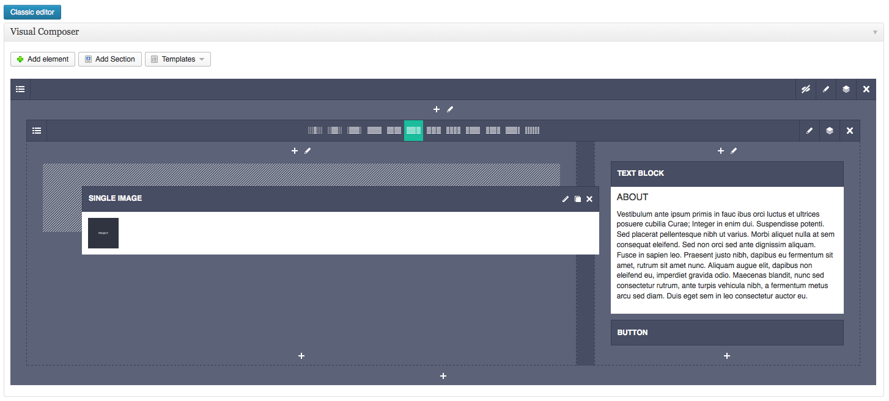
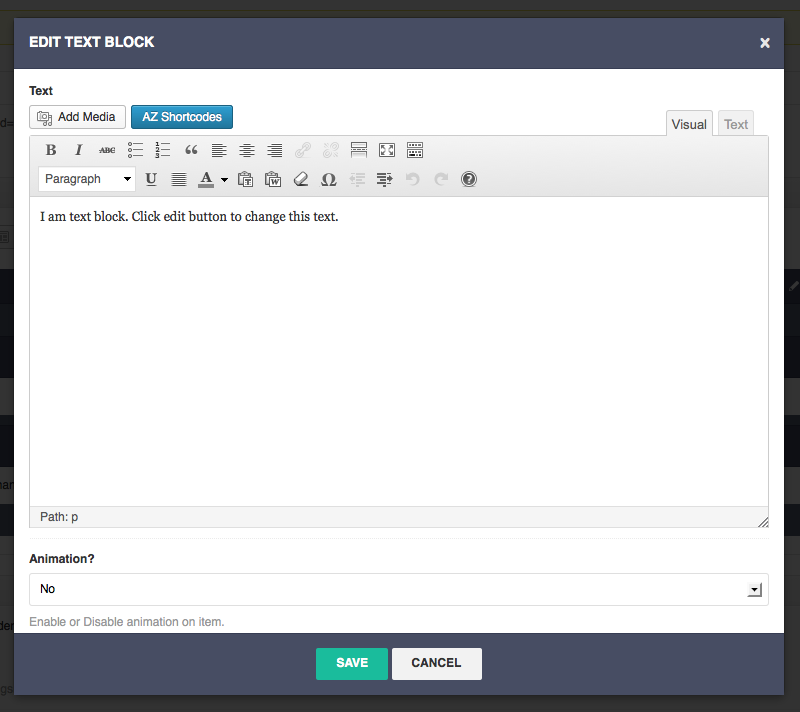

Thank you for purchasing my theme. This document covers the installation, set-up, help on getting started and extensive documentation of features. It is recommended you read it thoroughly to fully leverage the theme’s capabilities. Enjoy and building with Klaus. If you like the theme, please show your appreciation by taking the time to rate it!
Installing KLAUS Theme
To install this theme you must have a working version of Wordpress already installed. For this information in regard to installing Wordpress, please see the Wordpress Codex - http://codex.wordpress.org/Installing_WordPress.
You can install this Wordpress Theme using two installation methods:
METHOD 1: Using Wordpress Administration Panel
Using klaus.zip found in ZIP file you downloaded, you should perform the following steps:
METHOD 2: Using FTP Upload
Unzip klaus.zip found in ZIP file you downloaded, you should perform the following steps:
Recommended Plugins
With the activation of the theme appear a popup with the a list of plugins for Klaus Theme:.
Setting Up the Homepage and Blog
To set up the homepage you must create a new page, you can do so by navagating to Pages › Add New.
Now give the page a tile i.e. “Home” insert content with page builder and click “Publish”.
Now add one more page and give the page title “Blog”, for this page add only the title no page template required.
Once you have created your pages, navigate to Settings › Reading and select “A Static Page”.
Choose the home page as the “Front Page”, and the blog page ad the “Post Page” and click “Save your Changes”.
Configure Twitter Feed
For use the big twitter shortcode or twitter widgets you need set your API Keys.
Go to Settings › Twitter Feed Auth you’ll notice some weird fields. Those are the fields that you actually need to complete and if you give a
read to the description you’ll understand what you have to do.
I’ve found this discussion on the Twitter forums and i thought that it’s a good resource on this topic: https://dev.twitter.com/discussions/631
WPBakery Visual Composer - Get Fatal Error
Simple if you get this error when you can try to activate WPBackery Visual Composer Plugin, You need disable FTP Mode on Wordpress. It's simple see this link: https://intellispire.zendesk.com/entries/20906118-Disabling-FTP-Mode-in-Wordpress
The theme comes packed with features that control the layout and extend the functionality of Wordpress.
Custom Menu
The theme has a single custom menu located in the header section. To set up your custom menu simply navigate to Appearance › Menus. From here, enter your menu name and click “Create Menu”.
You can add items your menu bu using the section on left side. Once you have added all the links/pages you desire, save your menu and finally attact it to theme by selecting it from “Theme Location” Widget.
Make sure you save again when you’re done!
Custom Login Logo
The theme comes with an inbuilt function to replace the default WordPress login logo.
To replace the default login logo, replace logo-admin.png with your chosen image in the theme /_include/img/ folder.
Upload the new image to your server via FTP and the new logo will become visible on the WordPress login screen.
Theme Options Panel
The theme comes with a simple but powerful administration panel. You view the panel, navigate on Klaus Icon in the left-hand menu.
The Theme Options are conveniently spread over a number of tabs and each tab contains the options that pertain to a particular area of the theme.
Custom page layouts can be applied to any page by selecting the desired layout from the “Page Attributes” widget when creating/editing a page.
Archives
This is a page which displays all of your archives. It might be good for SEO to have it and also for users in order to give them a broader perspective over your blog. ( The page builder not working with this template. )
Sitemap
Similar to the archives template, this one displays a sitemap with the pages of your website. ( The page builder not working with this template. )
Contact
The contact page layout includes a larger map, configurable through Theme Options Panel. ( The page builder working with this template. )
Portfolio
The portfolio page is a simple page for your portfolio items. Don't required but it is advisable. ( The page builder working with this template. )
Portfolio Full
The portfolio full page is a simple page for your portfolio items for wall effects. Don't required but it is advisable. ( The page builder working with this template. )
Team
The team page is a simple page for your team items. Don't required but it is advisable. ( The page builder working with this template. )
The theme comes with 4 custom widgets that can be used to configure how your site displays content.
They can be found under Appearance › Widgets.
Custom Flickr Photostream Widget
This widget allows you to configure and display Flickr photos from a user’s photostream.
Custom Dribbble Photostream Widget
This widget allows you to configure and display Dribbble photos from a dribbble username.
Custom Twitter Widget
This widget allows you to configure and display tweets from a twitter user.
Custom Social Profile Widget
This widget allows you to display your social profiles, these are configurable through the Theme Options Panel.
The theme supports the use of different post formats in order to change the appearance of your content. The theme supports standard, image, gallery, video, link, quote and audio formats.
Standard
This format functions just as you would expect any other typical post, the appearance of your content is not altered. You can add a Featured Image.
Image
To use the image post format, select “image” from the format select menu and assign a Featured Image.
Your featured image image will be shown along with your post content and if clicked open a fancybox pop-up.
Gallery
To use the gallery post format, select “gallery” from the format select menu and assign the Revolution Slider Alias.
Audio
To use the audio post format, select “audio” from the format select menu and insert your content as normal.
You will find an additional menu used to upload your MP3 audio file.
Video
To use the video post format, select “video” from the format select menu and insert your content as normal. You will find an additional menu used to upload your video. Each post can display either a self hosted video or video embedded from YouTube or Vimeo.
To add a video from either Vimeo or YouTube, simply copy and paste the provided embed code in the appropriate section.
To display self hosted video, upload .webm, .mp4 or .ogv file formats. You must also provide a preview image.
** Note: You must provide both formats for consistent display across all browsers.
Quote
To use the quote post format, select “quote” from the format select menu and insert your content as normal.
You will find an additional menu used to enter your quote.
Link
To use the link post format, select “link” from the format select menu and insert your content as normal.
You will find an additional menu used to enter your link URL. Your link will be shown, and your post title will be used as the link text.
One thing that might have caught your attention since activating the plugin “AZ Custom Post Type” is the “Team” tab that appeared.
This is where you will manage, edit and create all of the people related items that you wish to place in your team page.
Adding Team items is the same as creating blog posts. Featured image is used for team lists.
You can create with page builder your layouts.
Team Disciplines ( Required )
Any discipline that you create for your team will automatically be added to the drop-menu filter list on the team page. You should always remember to assign your items into a one or more discipline in order for your user to be able to sort through them.
Team Attributes ( Required )
The attributes are only labels that appear below the name, such as CEO, Founder, Designer, etc also is possible add one or more attributes.
Team Featured Image ( Required )
You have the possibility to enter personal image of your team through the “Featured Image” Widget.
One thing that might have caught your attention since activating the plugin “AZ Custom Post Type” is the “Portfolio” tab that appeared.
This is where you will manage, edit and create all of the work related items that you wish to place in your portfolio page.
Adding Portfolio items is the same as creating blog posts. Featured image is used for portfolio lists.
You can create with page builder your layouts.
Project Disciplines ( Required )
Any category that you create for your portfolio will automatically be added to the drop-menu filter list on the portfolio page.
You should always remember to assign your items into a one or more categories in order for your user to be able to sort through them.
Project Attributes ( Required )
The attributes are only labels that appear below the name, such as Brading, Web Design, Print Design, etc also is possible add one or more attributes.
Project Featured Image ( Required )
You have the possibility to enter personal image of your project through the “Featured Image” Widget.
Portfolio Project Item Settings ( Optional )
You can upload a different image instead of featured image popup.
Also you can decide to have a fancybox gallery (for images or videos) or enter the url of a video instead of the image pop-up.
To run your gallery ( image or video) you need enter the same name for each project concerned to be inserted into the LightBox Gallery.
Or you can create a post with different pop-up images. Remember to add the name of the gallery and add "alt" attribute to your image for display the text.
The theme is composed of a Page Builder and a complete set of shortcode that will help in the creation of your pages. Whether the Page Builder and AZ_Shortcodes Plugin working together and these are provided with descriptions that will help you understand how they work, below a complete list of the shortocodes that you will find inside the Theme.
** IMPORTANT NOTE:All Shortcode available with page builder has more options to configure. For see all options it's simple click on EDIT Button ( Pencil Icon ). Try -> Add Element -> Section -> Click on Edit and Configure. Enjoy!
Complete List of Shortcode
** Note:Not all shortcode is available with page builder but if you can use it click on blue-button ( AZ_Shortcode ) and here you can add your shortcode. This is a list of the some shortcode available only in this method.
Available Shortcode via AZ_Shortcode Plugin
Page Builder Interface

AZ Shortcode - Blue Button ( Available with or without Page Builder )

Lightbox Image
You can upload a thumbnail image and appear with a popup. Also you can have a different Thumbnail for image pop-up instead of original image.
The lightbox is responsive and adapt to the column, if you want a not responsive use the Thumbnail Width field.
You can use this for create a gallery image between lightbox image shortcode, it's simple add the same "Gallery Name" for each shortcode.
** Note:The Gallery Feature work only for gallery of the same type of lightbox. If you use lightbox image the gallery works only with image not with lightbox video. You can create only gallery images or gallery videos not mixed gallery.
Lightbox Video
You can upload a image and add a video ( YouTube or Vimeo ) with a popup.
The lightbox is responsive and adapt to the column, if you want a not responsive use the Thumbnail Width field.
You can use this for create a gallery video between lightbox video shortcode, it's simple add the same "Gallery Name" for each shortcode.
** Note:The Gallery Feature work only for gallery of the same type of lightbox. If you use lightbox image the gallery works only with image not with lightbox video. You can create only gallery images or gallery videos not mixed gallery.
Lightbox Image Gallery
You can upload a image and add a multiple image for gallery popup.
The lightbox is responsive and adapt to the column, if you want a not responsive use the Thumbnail Width field.
You can use this for create a gallery images, it's simple add the same "Gallery Name" for this shortcode.
** Note:This shortcode work only with images not video.
Important feature included in this theme is the ability to animate each elements of your pages.
All your elements can be animated and above all you can associate for each element a different animation.
There is also the possibility to disable the animations for mobile devices ( Via Theme Options Panel ). To access this feature it is very simple, whenever you create an object
using the page builder, inside the options you can decide if activate the animation, if true you can choose between 6 different animation effects.
Also if you want modify the animation effects, you go to “style.css -- line 6215” and if necessary change the values.
Klaus Theme provides a set of CSS classes that can help when creating pages with page builder, or customize an existing elements by adding a class or more classes ( without commas or dots ) in the field provided. See below a simple example if you add a custom classes on an element.
List of CSS Classes
/* Font Color */
.white > * {
color: #FFFFFF !important;
}
/* Font Weight */
.text-ultra-light > * {
font-weight: 100 !important;
}
.text-light > * {
font-weight: 200 !important;
}
.text-book > * {
font-weight: 300 !important;
}
.text-normal > * {
font-weight: 400 !important;
}
.text-medium > * {
font-weight: 500 !important;
}
.text-semi-bold > * {
font-weight: 600 !important;
}
.text-bold > * {
font-weight: 700 !important;
}
.text-extra-bold > * {
font-weight: 800 !important;
}
.text-ultra-bold > * {
font-weight: 900 !important;
}
/* Font Style */
.italic {
font-style: italic !important;
}
.uppercase {
text-transform: uppercase !important;
}
/* Padding */
.no-padding {
padding: 0;
}
.small-padding {
padding: 40px 0 40px;
}
.default-padding {
padding: 70px 0 70px;
}
.default-padding-mod {
padding: 70px 0 40px;
}
.default-padding-mod-center {
padding: 100px 0 70px;
}
.large-padding {
padding: 100px 0 100px;
}
/* Shadow */
.shadow-on {
-webkit-box-shadow: inset 0px 1px 3px rgba(0, 0, 0, 0.12),
inset 0px -1px 3px rgba(0, 0, 0, 0.12);
-moz-box-shadow: inset 0px 1px 3px rgba(0, 0, 0, 0.12),
inset 0px -1px 3px rgba(0, 0, 0, 0.12);
box-shadow: inset 0px 1px 3px rgba(0, 0, 0, 0.12),
inset 0px -1px 3px rgba(0, 0, 0, 0.12);
}
/* Margin */
.margin-0 {
margin-bottom: 0 !important;
}
.margin-10 {
margin-bottom: 10px !important;
}
.margin-15 {
margin-bottom: 15px !important;
}
.margin-20 {
margin-bottom: 20px !important;
}
.margin-30 {
margin-bottom: 30px !important;
}
.margin-40 {
margin-bottom: 40px !important;
}
.margin-50 {
margin-bottom: 50px !important;
}
.margin-60 {
margin-bottom: 60px !important;
}
.margin-70 {
margin-bottom: 70px !important;
}
.margin-80 {
margin-bottom: 80px !important;
}
.margin-90 {
margin-bottom: 90px !important;
}
.margin-100 {
margin-bottom: 100px !important;
}
.no-margin-top {
margin-top: 0 !important;
}
.no-margin-bottom {
margin-bottom: 0 !important;
}
.no-margin-left {
margin-left: 0 !important;
}
.no-margin-right {
margin-right: 0 !important;
}
.no-margin {
margin: 0 !important;
}
/* Single Image Opacity Hover Class */
.opacity-hover {
opacity: 0.5 !important;
-moz-backface-visibility: hidden; /* Prevents Flickr Image On Firefox */
-webkit-transition: opacity 0.15s ease-in-out 0s;
-moz-transition: opacity 0.15s ease-in-out 0s;
-o-transition: opacity 0.15s ease-in-out 0s;
transition: opacity 0.15s ease-in-out 0s;
}
.opacity-hover {
opacity: 1 !important;
}
Responsive Images - Classes
Klaus Theme uses as a Bootstrap 3.0 Framework. All images added using the content editor of wordpress are not responsive.
However, all images added via lightbox shortcodes or via featured images menu for team, portfolio and blog are automatically set to be responsive.
For all other images you need to take action on the html code. You can use one of these two classes ad needed.
.img-responsive ( default bootstrap class )
Use this class if your image is not necessarily to fit completely to the width of the column, but that has to adapt to a lower resolution than the desktop version.
.img-full-responsive ( custom class )
Use this class if you want your image to fit completely to the width of the column and it fits in an automatic manner at lower resolutions.
.mobile-padding ( custom class )
Use this class if you want resize the custom padding value on section shortcode. Example if your section have a custom padding of 250px top and bottom and you resize this add this custom css class for automatically resize the padding at lower resolutions.
.portfolio-full ( custom class )
Use this class if you want portfolio wall effects in a page is not present the template page "Portfolio Full". It's simple create a section with Full Width and add the portofilo-full class to row. See the image.
You can upgrade our theme by performing following steps: